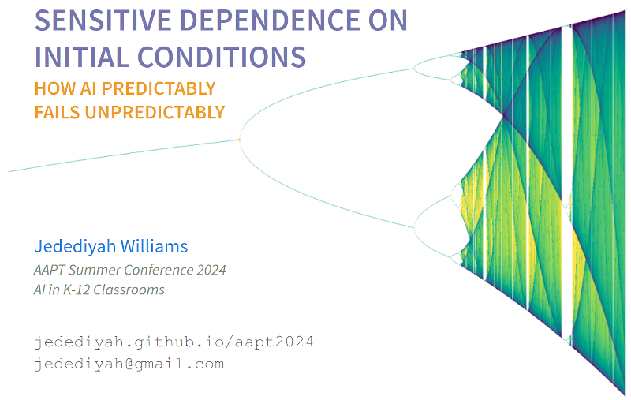

Below is the approximate transcript of my very brief talk "Sensitive Dependence on Initial Conditions: How AI Predictably Fails Unpredictably" which was presented at the 2024 Summer Meeting of the American Association of Physics Teachers. The slides are available here.
Too much to talk about
There is too much to talk about! Regarding AI, there is an overwhelming amount to parse: power, surveillance, privacy, security, misuse, disinformation, liberty, discrimination, environment, labor, law and oversight, etc. In the context of K-12 classrooms, deploying AI systems gets really complex.
The view of AI (whatever we define that as) being presented to educators is largely positive and uncritical. There is a push to educate teachers and students on how to use AI tools (as consumers) instead of a push for "AI literacy" or "AI education" that involves a technical and critical skill set.
I have been involved in AI research and have taught robotics and machine learning fundamentals for years. I am not opposed to AI. I am opposed to irresponsible deployment of broken technologies into classrooms. This is tech that is often expensive and exploitative.
AI often does not work
Just a few weeks ago, Google (a company whose name used to be synonymous with fact-checking) deployed their state-of-the-art AI into Google Search. If you are having trouble keeping cheese on your pizza, it recommended you add glue.
Many AI technologies are simply broken. That doesn't seem to be stopping anyone from deploying them. Large language models, for example, are fundamentally the wrong choice for many applications. A critical question becomes:
To anyone who has spent any time considering data or AI ethics, it comes as no surprise that the query "i'm feeling depressed" resulted in Google's AI encouraging suicide. It is not the first time that a chat bot has suggested suicide. It won't be the last.
Complexity and Chaos
A pervasive misconception is that big data combined with the compute power of big tech companies implies solutions (even where there aren't problems!). This is oen facet of techno-solutionism, the idea that technology can easily solve complex problems. If the problem isn't solved yet, it just needs more technology!
My dear physicists, we know this is not the case. We know that some problems are intractable, and even with numerical methods we can't always converge on an answer. We know the difference between the 2-body problem and the 3-body problem isn't just 1 more body!
Complex systems are not generally predictable. A concern, in general but also in the context of K-12 classrooms, is that the type of predictions being promised by tech companies are intractable (and they are approaching these problems in fundamentally wrong ways).
Responsible Educators
I humbly request that we vett and validate technologies. And let's avoid confirmation bias. Some technologies are both very impressive *and* not useful. I don't only want to know what it looks like when a system works; I also want to know how easily it breaks and what happens when it breaks.
What happens when you take a technology that is sensitively dependent on the inputs students will feed into it, and release it into the wild of education? You don't know until you do it, and that is not a reasonably safe approach to education.
AI history is littered with failures
Why are broken systems being deployed? Good marketing, I suppose. AI failing spectacularly is nothing new. The history of AI is littered with spectacular failures.
You might remember IBM's Watson. A decade ago, it was said that IBM's Watson was going to revolutionize healthcare. It was put into the world's largest hospitals. It didn't work. It was sold for scrap.
A few weeks ago, McDonald's shut down its AI ordering system because it was garbage. Having just a little bit of understanding about modeling complex systems means that you won't be surprised when you roll up to McDonald's, order ice cream, but get stacks of butter instead. Broken AI technologies keep getting deployed into the wild. They keep failing.
AI as a source of knowledge? No.
Real authors are being pushed out of marketplaces that are being flooded with AI generated text, but is that text telling you to eat poisonous plants? What does this sort of technology look like in education?
There are many sources of AI hype. One facet is the anthropomorphizing of text generation machines. Another reason is that companies tend to misrepresent the abilities of their products, products that are designed in a way to exploit human psychology.
There is a well documented history of tech companies lying to us about their products. When someone presents you with a new technology, remember that it is not your responsibility to find a way to use it. If someone wants you to give them money, I hope they are demonstrating that their product actually works and is solving a problem for which you actually require a solution.
Concern
To what extent are we placing our students' futures into biased, harmful, pseudoscientific noise machines?
Like many applications AI is being wedged into, Education is a complex system. The standard approach of "This time, things will be different" demonstrates a profound lack of respect for complex systems.
Often, the models that are getting deployed are fundamentally the wrong class of models. There is a strong bias toward LLMs at the moment, even in domains where LLMs struggle.
School systems are dumping money into these technologies, and voluntarily giving up sensitive student data. OpenAI has repeatedly experienced security vulnerabilities, and a lot of applications are being developed on top of OpenAI technologies.
The president of NCTM released a statement on AI a few months ago. In it, he casually suggests secretly surveilling students without their consent. That is messed up. He also implies that this data will be sent to some hypothetical 3rd party app. People in positions of authority are feeling pressured to give guidance on AI but lack expertise or have no idea what they are doing with regard to AI and data.
Even if we ignore the multitude of concerns around privacy, environment and energy consumption, labor exploitation, intellectual property theft, lack of accountability... please remember that AI systems often do not work.
Humble Requests
-
Be Scientists (curious and reasonably skeptical)
- Ask: what does the tech claim to do? Is that useful?
- Ask: Does this tech actually do what it claims to do?
- Recognize that advertisements are not peer reviewed research
-
Be Ethical Educators
- Do not give sensitive student data to tech companies
- Do not volunteer your students as experimental subjects
- Ask: what are the consequences when this technology breaks?